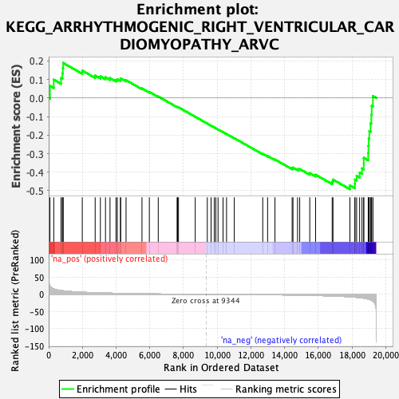

| | | Dataset | DE_genes |
| Phenotype | NoPhenotypeAvailable |
| Upregulated in class | na_neg |
| GeneSet | KEGG_ARRHYTHMOGENIC_RIGHT_VENTRICULAR_CARDIOMYOPATHY_ARVC |
| Enrichment Score (ES) | -0.49185765 |
| Normalized Enrichment Score (NES) | -1.4636446 |
| Nominal p-value | 0.018595042 |
| FDR q-value | 0.18658301 |
| FWER p-Value | 0.936 |
Table: GSEA Results Summary

Fig 1: Enrichment plot: KEGG_ARRHYTHMOGENIC_RIGHT_VENTRICULAR_CARDIOMYOPATHY_ARVC
Profile of the Running ES Score & Positions of GeneSet Members on the Rank Ordered List
| SYMBOL | RANK IN GENE LIST | RANK METRIC SCORE | RUNNING ES | CORE ENRICHMENT | | 1 | CACNA1C | 75 | 24.606 | 0.0654 | No |
| 2 | DMD | 300 | 15.955 | 0.0987 | No |
| 3 | CACNA2D2 | 734 | 10.999 | 0.1074 | No |
| 4 | DSP | 814 | 10.558 | 0.1330 | No |
| 5 | CACNB2 | 840 | 10.397 | 0.1610 | No |
| 6 | LEF1 | 862 | 10.239 | 0.1887 | No |
| 7 | DAG1 | 1994 | 6.116 | 0.1476 | No |
| 8 | ACTG1 | 2759 | 4.582 | 0.1211 | No |
| 9 | CACNA2D1 | 3069 | 4.123 | 0.1167 | No |
| 10 | CTNNB1 | 3371 | 3.678 | 0.1115 | No |
| 11 | EMD | 3639 | 3.363 | 0.1072 | No |
| 12 | ACTB | 3995 | 2.941 | 0.0972 | No |
| 13 | LAMA2 | 4074 | 2.838 | 0.1012 | No |
| 14 | TCF7 | 4260 | 2.641 | 0.0990 | No |
| 15 | ITGA6 | 4271 | 2.628 | 0.1059 | No |
| 16 | ACTN4 | 4591 | 2.298 | 0.0959 | No |
| 17 | ITGA9 | 5537 | 1.515 | 0.0514 | No |
| 18 | DSC2 | 5974 | 1.251 | 0.0325 | No |
| 19 | PKP2 | 6502 | 0.939 | 0.0079 | No |
| 20 | JUP | 7620 | 0.440 | -0.0485 | No |
| 21 | ITGA5 | 7647 | 0.432 | -0.0486 | No |
| 22 | SLC8A1 | 7703 | 0.413 | -0.0503 | No |
| 23 | ATP2A2 | 8697 | 0.133 | -0.1011 | No |
| 24 | ITGAV | 9413 | -0.011 | -0.1380 | No |
| 25 | ITGB8 | 9637 | -0.049 | -0.1494 | No |
| 26 | CACNB4 | 9829 | -0.085 | -0.1590 | No |
| 27 | ITGA1 | 9916 | -0.106 | -0.1631 | No |
| 28 | ACTN1 | 10050 | -0.138 | -0.1696 | No |
| 29 | SGCB | 10348 | -0.211 | -0.1843 | No |
| 30 | CACNA1D | 10555 | -0.263 | -0.1942 | No |
| 31 | ITGB3 | 11014 | -0.390 | -0.2168 | No |
| 32 | LMNA | 12703 | -0.975 | -0.3011 | No |
| 33 | ITGA11 | 12991 | -1.095 | -0.3128 | No |
| 34 | ITGA4 | 13428 | -1.315 | -0.3316 | No |
| 35 | DSG2 | 14448 | -1.999 | -0.3786 | No |
| 36 | CACNA2D3 | 14497 | -2.035 | -0.3753 | No |
| 37 | CTNNA1 | 14769 | -2.250 | -0.3830 | No |
| 38 | ITGB7 | 14897 | -2.358 | -0.3829 | No |
| 39 | RYR2 | 15493 | -2.923 | -0.4054 | No |
| 40 | CACNA2D4 | 15839 | -3.318 | -0.4138 | No |
| 41 | CACNG1 | 16824 | -4.744 | -0.4512 | No |
| 42 | ITGA2B | 16871 | -4.818 | -0.4401 | No |
| 43 | ITGA3 | 17876 | -7.210 | -0.4716 | Yes |
| 44 | ITGA7 | 18169 | -8.333 | -0.4632 | Yes |
| 45 | ITGA2 | 18175 | -8.371 | -0.4399 | Yes |
| 46 | CACNB1 | 18274 | -8.843 | -0.4200 | Yes |
| 47 | CACNG8 | 18453 | -9.678 | -0.4020 | Yes |
| 48 | ITGB6 | 18591 | -10.392 | -0.3798 | Yes |
| 49 | CACNG4 | 18695 | -11.136 | -0.3538 | Yes |
| 50 | TCF7L2 | 18697 | -11.139 | -0.3225 | Yes |
| 51 | ITGA10 | 18963 | -13.951 | -0.2969 | Yes |
| 52 | CACNA1F | 18973 | -14.071 | -0.2577 | Yes |
| 53 | CACNB3 | 18991 | -14.325 | -0.2183 | Yes |
| 54 | ITGB5 | 19027 | -14.771 | -0.1785 | Yes |
| 55 | CACNG6 | 19101 | -16.232 | -0.1366 | Yes |
| 56 | ITGB1 | 19145 | -17.087 | -0.0907 | Yes |
| 57 | ITGB4 | 19168 | -17.673 | -0.0421 | Yes |
| 58 | TCF7L1 | 19242 | -19.885 | 0.0101 | Yes |
Table: GSEA details [plain text format]
Fig 2: KEGG_ARRHYTHMOGENIC_RIGHT_VENTRICULAR_CARDIOMYOPATHY_ARVC: Random ES distribution
Gene set null distribution of ES for KEGG_ARRHYTHMOGENIC_RIGHT_VENTRICULAR_CARDIOMYOPATHY_ARVC